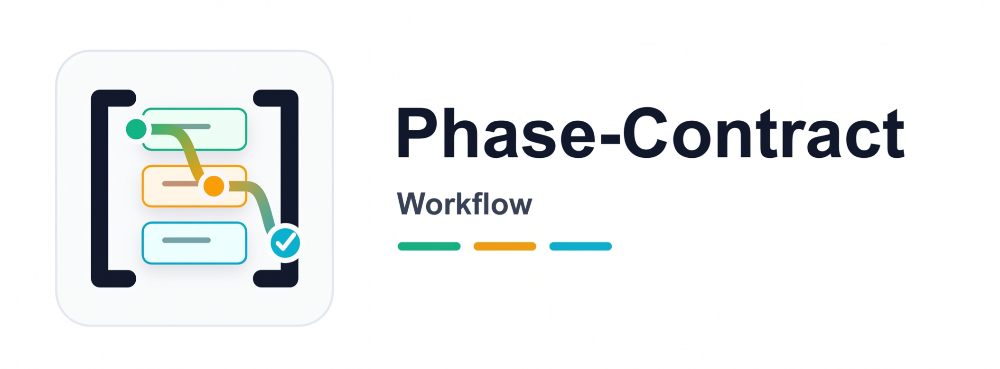

简介：一套面向长周期 AI 项目的实用工作流，让任务在压缩、换会话、换 Agent 之后依然能稳稳续跑。
Phase-Contract 不要求 Agent 把一切都记在上下文里，而是把大项目拆成一串清晰、可复查的小步骤。项目进度写在仓库里，所以即使中断很久，也能重新接上，而不是靠聊天记录回忆。
"把 AI 的稳定性从模型记忆迁移到仓库文件系统。"
English · 中文
快速导航：推荐场景 · 安装 · 快速开始 · 工作原理 · 文档索引
为什么
长时间使用 AI 做项目，真正容易坏掉的往往不是能力，而是连续性。目标会混在一起，当前任务会越做越宽，关键决策会在压缩后丢失。Phase-Contract 的作用，就是给这段长期工作一套稳定的书面结构，让 Agent 在中断之后还能沿着原来的方向继续推进。
推荐场景
如果你已经不满足于让 AI“帮我改一个小功能”，而是希望它能在数小时甚至数天的项目里持续推进、不反复走失，这个 Skill 就适合你。
适合什么任务
你可以在这些场景里使用它：
- • 大型重构 / 迁移：比如框架升级、SDK 替换、模块重写。这类工作更适合被拆成一段一段推进，而不是塞进一轮对话里。
- • 从 0 到 1 搭产品：基础设施、数据、服务、界面、测试、发布，本来就是不同性质的工作，分开推进会更稳。
- • 长文档 / 课程 / 报告工程：写作、审校、格式化、交付各自独立，长期项目更容易保持结构和风格。
- • 合规、安全、数据治理整改：要求多、链路长、复查频繁，把过程写清楚会比“记住它”更可靠。
- • 你想让 AI 能持续往前走：它可以沿着当前步骤继续推进，而不是每次都从头解释一遍整个项目。
你最终会得到什么
用完之后，你得到的不是一句“我应该做完了”，而是一份更可信的项目记录：
- • 哪些事情真的做完了，有明确记录。
- • 中断之后怎么恢复，有现成线索。
- • 每一步改动都更小、更容易在 Git 里复查。
- • 到了该审阅、发版或归档的时候，交接点会更清楚。
最小触发方式
最简单的用法是在 Agent 里直接说：
用 Phase-Contract 规划并连续推进这个项目：<你的项目目标>日常推进命令
如果项目已经生成了 plan，日常推进通常就是：
ruby scripts/planctl advance --strict
ruby scripts/planctl complete <phase-id> --summary "..." --next-focus "..." --continue核心思路
一句话：把 AI 的连续性从模型记忆迁移到仓库本身。 Agent 只需要专注当前步骤，而项目的共同状态由仓库文件承载。
它为什么能更稳
- • 先把大目标拆小。 与其让 Agent 同时记住整个项目，不如让它一次专注当前这一段工作。
- • 把共同状态写在仓库里。 当前进度、当前关注点、恢复线索都在文件里，所以能跨压缩、跨会话延续。
- • 让顺序和执行分开。 脚本负责判断现在该做哪一步，Agent 负责把这一步做好。
- • 把“完成”变成项目事实。 一步工作只有在仓库里被记录下来，才算真的完成，而不是因为 Agent 说得很像完成。
推论
它不是试图把 Prompt 变魔法，也不是另起一套庞大的框架，而是一种更务实的办法：让普通模型在长项目里表现得更可靠一些。
工作原理
它主要由三部分配合起来：
- • 共享指令负责让不同 Agent 对项目边界和工作方式保持一致理解，位置在
.github/copilot-instructions.md、CLAUDE.md、AGENTS.md。 - • 工作流脚本负责判断当前步骤、记录进度、帮助下一次顺利接上，位置在
scripts/planctl。 - • 项目工作文件负责保存计划、当前工作与恢复线索，位置在
plan/*。
运行时状态
日常使用里，最关键的就是两份文件：
- •
plan/state.yaml— 项目进度记录 - •
plan/handoff.md— 下一次快速接上的恢复说明
使用前最值得知道的几件事
- • Git 不是可有可无的前提：这套工作流依赖 Git 来核对改动范围、保留里程碑和支持回退；没有 Git，很多“完成”都无法被客观验证。
- • 它保护的是“当前步骤”，不是一份一次写死的总计划：先有一个总体骨架，但真正的细化会随着当前步骤的推进不断补全，所以未来步骤可以先保持占位。
- • 恢复方式是固定的：压缩或换会话后，不应该把全部 phase 文档重新装回上下文，而是按 manifest → handoff →
advance --strict的顺序恢复，或者直接用resume --strict。 - •
complete是正常写回的唯一入口：它负责刷新state.yaml、handoff.md，并留下当前 phase 的 Git 里程碑；正常使用时不要手改这两个文件，也不要在 phase 中途自己git commit/git push。 - • 跑完最后一个 phase 也不等于项目结束：当脚本提示
ACTION: finalize时，还需要跑一次finalize，把最终仪表盘和后续决策点交还给人。 - • 如果你要改仓库级规则，三份 Agent 指令必须同步：
.github/copilot-instructions.md、CLAUDE.md、AGENTS.md不是任选其一，而是需要保持一致的同一套约束。
安装与更新
推荐用 skills CLI 安装到 Copilot、Claude Code 或 Codex。多数情况下，一条命令就够了；后面的命令主要是给指定 Agent 或升级时使用。
# 安装（自动识别当前 Agent 的默认 skills 目录）
npx skills add nanzhipro/phase-contract-workflow-skill
# 显式指定目标 Agent
npx skills add github:nanzhipro/phase-contract-workflow-skill --agent claude
npx skills add github:nanzhipro/phase-contract-workflow-skill --agent copilot
npx skills add github:nanzhipro/phase-contract-workflow-skill --agent codex
# 升级到最新 main（全局安装要加 `-g`）
npx skills update phase-contract-workflow -g
# 重装（覆盖本地修改，请先备份）
npx skills add nanzhipro/phase-contract-workflow-skill --force
# 卸载
npx skills remove phase-contract-workflow -g安装后，在 Agent 会话里直接让它用 Phase-Contract 规划你的项目即可。完整脚手架流程和模板说明见 SKILL.md。
黄金循环
整个工作流会重复一个很简单的节奏：开始或恢复，加载当前项目上下文，完成当前步骤，记录进度，然后继续往下走。
advance --strict → 读 3 份上下文 → 实施（守 execution 边界）
↓
← handoff (脚本自动) ← complete <id> --continue
↓
（全部完成）→ finalize常用命令
一条命令即可启动、恢复或收尾：
ruby scripts/planctl advance --strict # 新会话 / 日常推进
ruby scripts/planctl resume --strict # 压缩后冷启动
ruby scripts/planctl lint-contracts --phase <id> # 实施前或 complete 前检查当前正式合同
ruby scripts/planctl complete <id> --summary "..." --next-focus "..." --continue
ruby scripts/planctl finalize # 全部 phase 成功后写最终 ledger + git 收尾，然后输出全计划仪表盘
ruby scripts/planctl doctor # 仓库体检（三份指令 SHA256 比对等）脚本会替你兜住什么
脚本负责处理那些长会话里最容易出错、但又不值得反复靠人盯着的机械部分：
- • 在记录进度前先检查当前步骤是否具备完成条件。
- • 让项目始终围绕当前这一步推进，而不是同时摊开很多步骤。
- • 如果未来步骤还只有一个占位说明，会提醒你先把它补成可执行的工作说明。
- • 这意味着项目不是先把所有任务细节一次规划完再排队执行，而是在推进当前步骤时，持续补全后续步骤的理解、推理与规划。
- • 只有当计划中的工作都被完整记账后，才会把项目视为真正收尾。
更细的规则可以看 references/phase-templates.md 和 references/workflow-template.md。
设计原则
- • 把进度放在大家都能检查的地方：写进项目文件，而不是藏在聊天里。
- • 让当前工作保持足够小：范围越收敛，Agent 和人类都越容易看清楚。
- • 把“决定做什么”和“把它做好”分开：这样执行时更稳定。
- • 把中断恢复当成正常流程：重新开始时应该像续上项目，而不是重新回忆。
- • 把完成视为被记录的事实：不是一段听起来很像完成的汇报。
完整的方法论和设计说明，见 references/methodology.md。
适用边界
适用
适合大型从 0 到 1 产品、迁移项目、大版本升级、架构替换、长文档工程、合规整改，以及其他“连续性比一时速度更重要”的任务。
不适用
不适合一次性小修复、开放式探索，或需求还在剧烈变化、暂时无法稳定拆步的阶段。
前置条件
- • 一个 Git 仓库，让工作流有可靠的项目历史可依附。
- • Ruby 2.6 或更高版本，用来运行内置的
planctl脚本。
快速开始
当作 Agent Skill 使用时，只要让它用 Phase-Contract 规划你的项目即可。Skill 会收集项目背景，把工作拆成步骤，并按 SKILL.md 生成所需文件：
生成出来的脚手架
<project>/
├── .github/copilot-instructions.md
├── CLAUDE.md
├── AGENTS.md
├── plan/
│ ├── manifest.yaml
│ ├── common.md
│ ├── workflow.md
│ ├── state.yaml
│ ├── handoff.md
│ ├── phases/phase-0-*.md
│ └── execution/phase-0-*.md
└── scripts/planctl手工接入
如果要手工接入现有项目，把 scripts/planctl.rb 复制过去，再根据 SKILL.md 里的模板补齐配套文件即可。
占位合同升级
刚开始时，不需要把所有未来步骤一次写满。先把当前步骤写清楚，后面的步骤保留轻量占位，等真正轮到它们时再补细即可。
更准确地说，这套工作流不是“先把全部任务完整规划好，再按顺序执行”，而是“先搭出总体骨架，再一边执行当前步骤，一边根据新发现继续规划、推理和细化后续步骤”。占位合同的意义就在这里：未来步骤先保留方向和接口，等真正进入时再升级成正式合同。
路线图
这个项目的长期方向很简单：让长时间 AI 项目更容易恢复、更容易复查，也更容易稳住节奏。
- 1. 更安全的中断恢复：让收尾做到一半时，也能更平滑地继续。
- 2. 更强的检查点与回滚：让每一步都更容易检查，也更容易撤回。
- 3. 内建重规划时机：让长项目调整方向时不会丢掉历史。
- 4. 更好的并行支持：让大型计划不必永远完全串行。
- 5. 更精准的上下文取回：让下一次会话只拿到真正需要的部分。
- 6. 预算与健康控制：让连续失败时更容易及时收敛，而不是继续漂移。
贯穿始终的思路没有变：不要把稳定性寄托在 AI 自律上，而要把它做进项目结构里。
文档索引
- • SKILL.md — 安装与脚手架生成流程
- • references/glossary.md — 术语说明
- • references/methodology.md — 完整设计说明
- • references/templates.md — 核心模板
- • references/phase-templates.md — 步骤模板
- • references/workflow-template.md — 工作流与收尾模板
- • references/agent-instructions-template.md — 共用 Agent 指令模板
- • assets/README.md — Logo 资产与设计说明
- • CHANGELOG.md — 版本记录
许可证
本项目沿用上层 Agent Skill 库的许可证；scripts/planctl.rb 没有外部依赖，也可以单独复用。